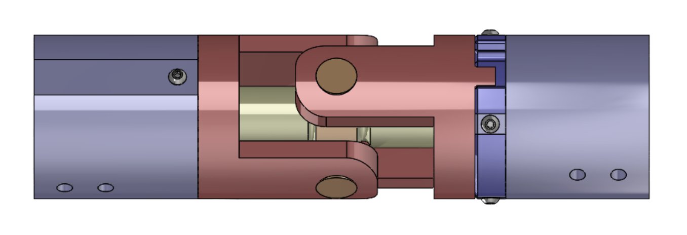

Reactive Road Sign System
Senior Design capstone exploring a retrofit mechanism for roadside U-channel signs to deflect under extreme winds and return to a safe, readable position.


Overview
Problem
Standard roadside signs can fail under extreme winds. The goal was to explore a retrofit concept that allows controlled deflection under high loading while maintaining durability and restoring the sign to a readable orientation.
Approach
We iterated on joint concepts and load paths, prioritized manufacturability, and built a test-driven plan (risk-first) to validate the most failure-prone elements before over-investing in full prototypes.
Design requirements
- Retrofit: compatible with common U-channel signposts without replacing the entire system
- Controlled deflection: reduce peak loads by allowing motion rather than rigid failure
- Recoverability: return to a safe “readable” position after loading event
- Serviceability: realistic maintenance/inspection for DOT-style operations
- Manufacturable: parts that can be cut, machined, and assembled with typical shop processes
Concept development
We explored multiple mechanical approaches for allowing motion while maintaining alignment and robustness. Key decision factors were load path clarity, corrosion tolerance, part count, and failure modes (pin shear, bending, bearing wear, and fastener loosening).
What we favored
- Simple joints with predictable failure modes
- Replaceable sacrificial elements (e.g., shear pins)
- Geometry that minimizes unintentional binding
What we avoided
- Over-complex resets requiring tight tolerances
- Hard-to-inspect internal mechanisms
- Concepts that shift loads into brittle fasteners
Analysis and testing plan
The validation strategy focused on de-risking the most uncertain elements first. Instead of “build everything and hope,” we targeted specific failure modes with small, measurable tests.
Key risks
- Pin shear / bearing deformation
- Joint binding under off-axis loads
- Wear + looseness over repeated cycles
- Corrosion and outdoor durability
Planned tests
- Static overload to identify first-yield component
- Cycle testing for looseness / wear progression
- Simple environmental exposure screening
- Repeatable “reset” validation
Manufacturing considerations
The concept was developed with shop realities in mind: cuttable profiles, machinable bores, accessible fasteners, and modular subassemblies. The goal was to make iteration fast and reduce tolerance stack-up issues.
Processes
- Waterjet/laser cut plates
- Drilled/reamed pin holes
- Off-the-shelf fasteners + bushings where possible
Design for assembly
- Minimize unique hardware
- Access for tools in-field
- Replaceable wear components
Current status
- CAD: assembled + exploded layouts completed
- Validation: test plan established to de-risk key failure modes
- Next: finalize a single “best” joint geometry, build a minimal test article, and run overload + cycle tests
{kind=link}